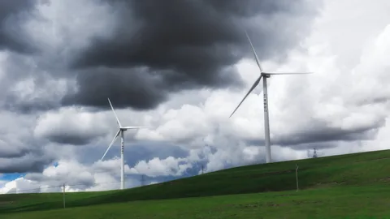
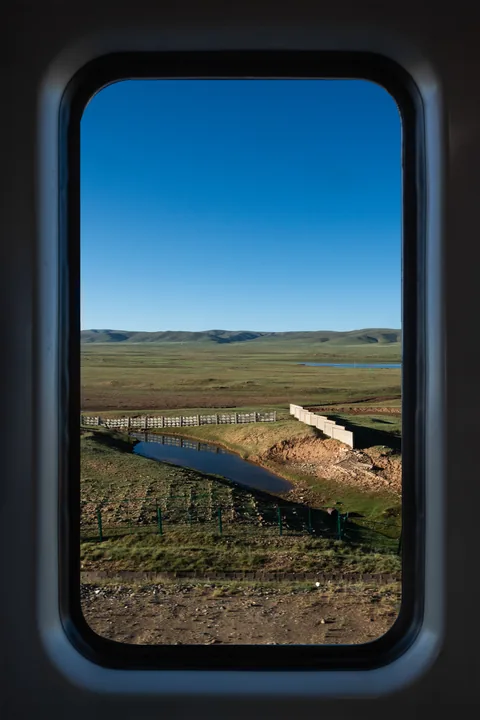
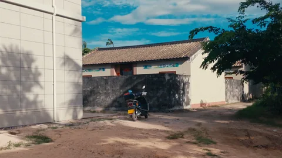

SELECTED SERIES
系列作品
六组关于天空、远方与日常的影像记录。
012024—2026
Hainan Skyscape
海南天际
关于海岸、云层与航天景观的长期记录
25 张作品022026

Journey to Xizang
西藏之旅
在驶向高原的列车上，风景不断从窗前经过。
23 张作品032026
Natural Landscapes
自然风光
山川、云层与自然光影的记录
02 张作品042022—2026
Aviation and Aerospace
航空与航天
我拍下的飞机与火箭
267 张作品05
Urban Fragments
城市切片
关于城市结构、光影与日常秩序的观察
07 张作品062024—2026

Video Stills
视频静帧
从视频中截取的静止画面
14 张作品FOOTSTEPS
拍摄足迹
这些年走过的拍摄地点，点击查看对应照片。
ABOUT